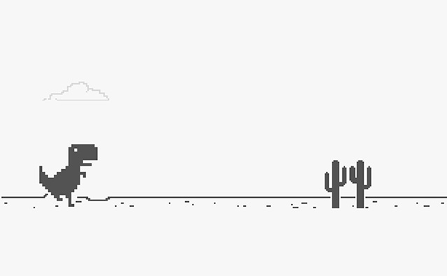
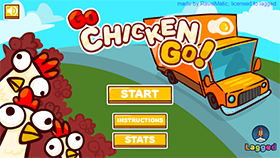

Google Chrome Dino Game
This game is a browser classic. While using Google Chrome if your computer loses connection to the Internet, the error page displays an 8-bit dinosaur. Pressing space bar on this page starts the game, which is an infinite runner than progressively speeds up the longer the user plays. It is a super simple game, but one that is still really fun to play. There really isn't too much to change about this game, it fulfills its purpose of wasting time when your Internet connection is down. Though, it would make the game more enjoyable if the user was able to customize or select different avatars to play.
Play the GameNote: This game only works in Google Chrome and URL cannot be directly linked to.
Go Chicken Go!
Go Chicken Go! is yet another take on the classic Frogger game, with one objective to cross a busy highway that has a river flowing through the middle. In my short time playing it I found it incredibly fun and incredibly brutal. Just a light clip from oncoming traffic sends the chicken flying in a bloody mess. I was really intrigued by the slow motion aspect that kicked in whenever the chicken was about to be hit by a car that gave the user extra reaction time to try and save their chicken. The one draw back from an otherwise addictive game was the unforgiving placement of the logs in the river. While to the user it may often look like the chicken is about to land on the log because it is over the object, but they are actually over just part of the image and not the object itself.
Play the GameGoodnight

Goodnight feels like a complete package, amazing art, interesting story, and a killer soundtrack. The game is obviously inspired in many ways by classic 8-bit games and their resurgence due to the likes of games like Undertale, but it is imaginative and uses the limited control scheme to create interesting and challenging levels. While the player dies instantly upon touching an enemy, the respawn time allows the player to get right back into the action. That being said, the controls could sometimes be slightly frustrating as the character felt like it had a little too much drift in its movement that would carry the player further than they may have intended. Also for a simple game that could really be controlled with just arrow keys, there is some disconnect between moving left and right and having to jump with the "x" key. However, I would give this particular annoyance a pass as it is likely to emulate playing on an actual arcade machine.
Play the Game